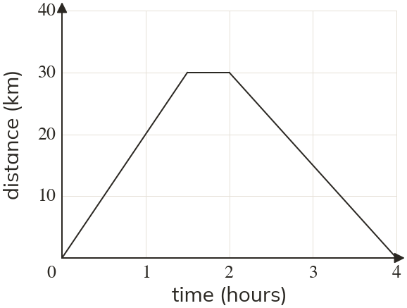
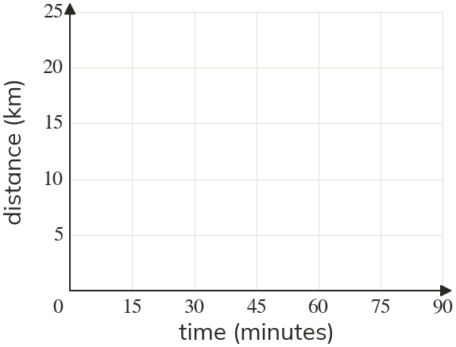

Westonbirt Maths · Speed-Time Graphs and Area
Distance-Time Graphs
Name: ______________________ Date: ____________
1
The graph shows Sam's bike ride. Describe each stage of the journey.

2
In which stage was Sam fastest? How can you tell from the graph?
3
Use the graph in question
Zara says Sam was riding uphill for the first hours, because the line goes up. What is her mistake? What does the first stage show?
Zara says Sam was riding uphill for the first hours, because the line goes up. What is her mistake? What does the first stage show?
4
A bus travels km in minutes, stops for minutes, then returns to the start in minutes. Draw its distance-time graph.

5
Walker A's line goes from to and walker B's from to in hours and km. Who is faster?
Ext
Use the graph in question
How far from home was Sam after hours?
How far from home was Sam after hours?